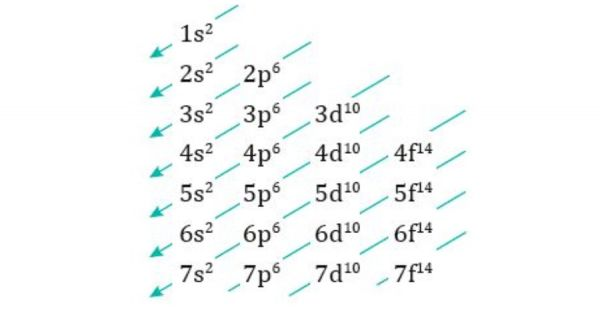
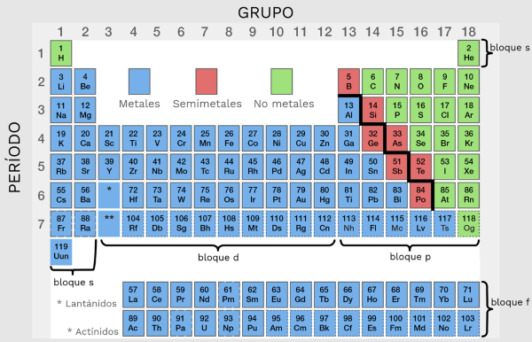
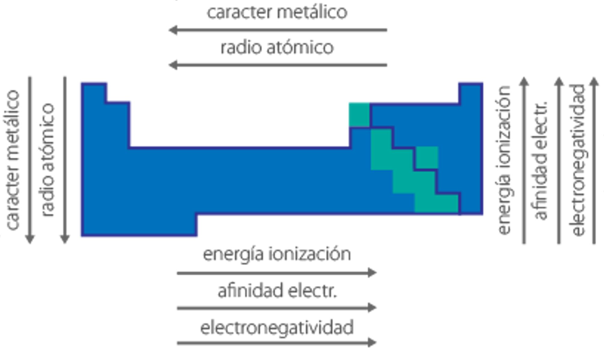
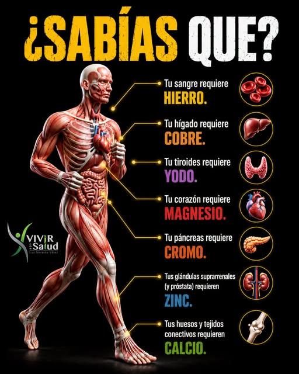

Elementos de Química
Comprender la materia - Cuidar la vida
Clase 2: Configuración Electrónica y Propiedades Periódicas
Comprender la materia - Cuidar la vida
Clase 2: Configuración Electrónica y Propiedades Periódicas
Distribución de los electrones en los orbitales de un átomo, siguiendo tres principios fundamentales:

| Elemento/Ion | Z | Configuración kernel | Importancia biológica |
|---|---|---|---|
| Na⁺ | 11 | [Ne] 3s⁰ | Principal catión extracelular |
| K⁺ | 19 | [Ar] 4s⁰ | Principal catión intracelular |
| Ca²⁺ | 20 | [Ar] 4s⁰ | Señalización, huesos, contracción |
| Fe²⁺ (ferroso) | 26 | [Ar] 3d⁶ | Hemoglobina, transporte de O₂ |
| I⁻ (yoduro) | 53 | [Kr] 5s² 4d¹⁰ 5p⁶ | Hormonas tiroideas |
La tabla periódica moderna ordena los elementos por número atómico (Z) creciente. Las propiedades químicas se repiten periódicamente debido a la configuración electrónica de la capa de valencia.

Estas propiedades varían de manera sistemática en la tabla periódica debido a la carga nuclear efectiva (Zef) y el apantallamiento.

Haz clic en cada nodo para desplegar u ocultar sus ramas.
Haz clic en la tarjeta para voltearla y ver la respuesta. Luego califícate con honestidad.
Zef = Z - σ, donde σ es la constante de apantallamiento (aproximadamente igual al número de electrones internos).
La configuración electrónica y las propiedades periódicas tienen aplicaciones directas en el diagnóstico, tratamiento y comprensión de procesos biológicos.

| Elemento | Símbolo | Configuración (neutro) | Función biológica | Deficiencia |
|---|---|---|---|---|
| Hierro | Fe | [Ar] 4s² 3d⁶ | Hemoglobina, mioglobina, citocromos | Anemia ferropénica |
| Zinc | Zn | [Ar] 4s² 3d¹⁰ | Cofactor de más de 300 enzimas | Retraso del crecimiento, inmunodeficiencia |
| Cobre | Cu | [Ar] 4s¹ 3d¹⁰ | Ceruloplasmina, citocromo oxidasa | Anemia, anomalías óseas |
| Manganeso | Mn | [Ar] 4s² 3d⁵ | Superóxido dismutasa, metabolismo óseo | Alteraciones del metabolismo |
| Yodo | I | [Kr] 5s² 4d¹⁰ 5p⁵ | Hormonas tiroideas (T3, T4) | Bocio, hipotiroidismo |
"Si, Soy Peruano, Soy Peruano, Soy de Perú, Soy de Perú, Soy Fanático De Perú, Soy Fanático De Perú"
"1s, 2s, 2p, 3s, 3p, 4s, 3d, 4p, 5s, 4d, 5p, 6s, 4f, 5d, 6p, 7s, 5f, 6d, 7p"
(Se recuerda con la regla del serrucho o de las diagonales).
Na⁺, K⁺, Ca²⁺, Mg²⁺, Cl⁻, HCO₃⁻, PO₄³⁻ — "NKCMP" (recordar como los principales electrolitos).
Haz clic en cada término para ver su definición:
Error: Escribir 3d⁴ antes de 4s² (ej. para el hierro).
Error: "El ion Na⁺ es más grande que el átomo de Na."
Error: "El Cs es más electronegativo que el F."
Error: "Zef es igual a Z para todos los electrones."
Error: "El elemento con configuración [Ne]3s²3p⁵ está en el grupo 2."
Se mostrarán 5 preguntas al azar de un total de 15. Al finalizar, podrás cargar una nueva ronda.